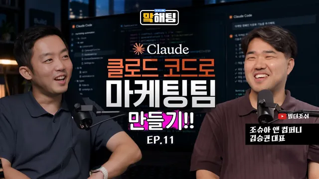

"마케팅의 판도가 바뀐다" 클로드 코드로 기획부터 집행까지 에이전틱하게 끝내는 법 | 빌더 조쉬 김승권 대표 | 맠해팅 EP.11

원본 영상 보기 →
- 에이전트는 팀으로 일을 시켜야 품질이 올라가요
- 서브 에이전트는 정규직, 스킬은 프리랜서로 구분하면 편해요
- 마케팅 자동화는 기획에서 측정까지 이미 이어지고 있어요
한 줄 요약
빌더 조쉬 김승권 대표가 클로드 코드로 카드뉴스 에이전트 팀을 만드는 과정을 직접 보여 주면서, 마케팅이 기획부터 집행까지 에이전틱하게(AI가 스스로 판단하고 도구를 써서 일을 이어 가는 방식으로) 바뀌는 흐름과 마케터가 먼저 손대야 할 두 가지 도구, 그리고 조심할 점을 정리한 인터뷰입니다.
전체 내용 정리
올해 들어 기업 현장의 AI 수준이 눈에 띄게 달라졌어요
김승권 대표는 창업 3년 차에 접어든 회사를 운영하면서 삼성, SK, 카카오 같은 대기업에 AI 강의를 다니고 있어요. 진행자가 회사 안에서 일할 때와 직접 사업을 할 때 무엇이 다르냐고 묻자, 김 대표는 회사에서는 남의 돈을 쓰지만 지금은 자기 돈이 타들어 간다고 웃으며 답했어요. 성과가 나쁘면 버티기 어려우니 더 최적화하고 싶어지고, 그 속도를 AI가 한층 끌어올려 준다는 설명이었습니다.
김 대표의 회사에서도 메타(Meta) MCP(AI가 외부 서비스를 직접 다루게 해 주는 연결 규격)를 써서 소재 테스트와 광고 집행을 직접 하고 있고, 콘텐츠 마케팅은 워낙 중요해서 따로 많이 연구하고 있다고 해요.
강의 현장의 변화는 더 극적이에요. 올해 초만 해도 바이브 코딩(AI에게 말로 지시해서 코드를 만드는 방식)이나 클로드 코드, 코덱스(Codex)를 써 보려는 분위기가 거의 없었는데, 지금은 고객사 담당자들이 직접 만든 제품을 들고 온다고 해요. 코덱스나 클로드 코드로 만들어 본 프로토타입이라며 보여 주는데, 그 완성도가 꽤 괜찮다는 거죠. 김 대표는 이걸 보면서 위기감도 많이 느낀다고 했습니다.
진행자도 기업 담당자들을 만나 보면 대부분 데이터 아키텍처라는 말을 꺼낸다고 거들었어요. 풀어 보면 데이터를 잘 쌓아서 AI에게 익히게 해야 좋은 답이 나온다는 이야기로 모인다는 거예요.
김 대표는 여기서 한 걸음 더 나아간 사례를 들었어요. 쇼핑몰에 재고나 가격을 묻는 CS(고객 문의)가 들어오면, 예전에는 답변해 주는 데서 끝났다면 이제는 고객 목소리(VOC)를 한곳에 모아서 에이전트 세 개가 나눠 일해요. 첫 번째 에이전트가 답변하고, 두 번째가 데이터를 쌓고, 세 번째가 그걸 바탕으로 개선해서 사람 손 없이 제품에 반영까지 하는 구조예요. 에이전트가 스스로 루프(반복 고리)를 돌며 제품을 고치는 모습이 나타나고 있어서, 너도나도 이걸 하고 싶어 한다는 설명이었어요.
기획에서 측정까지 에이전틱하게 돌리는 마케터가 이미 있어요
마케터들이 AI를 어디까지 쓰느냐는 질문에, 김 대표는 브랜드 캠페인 기획부터 소재 집행, 측정까지 전부 에이전틱하게 하는 분을 최근 여럿 봤다고 답했어요. 대표적인 예로 자기 채널에 나왔던 김형태 대표를 들었습니다.
김형태 대표는 클로드 코드로 맥락을 모으고 캠페인 브리프(기획 요약서)를 만든 다음, 그 캠페인에 맞는 이미지와 영상 소재를 만드는 API를 클로드 코드에 붙여서 소재를 여러 세트 제작했다고 해요. 그렇게 만든 소재를 메타 MCP나 구글 쪽 API에 연결해 자동으로 집행하고, 측정 보고서까지 대시보드로 만드는 단계까지 갔다는 거죠.
다만 그분들도 광고 공급사 쪽이 아직 모자란 부분이 있다고 말했대요. 메타 광고에서 퍼포먼스 마케팅을 끝낸 뒤 최적화하거나 새로 재집행해야 할 때, AI가 이 과정을 아직 완벽하게 해 주지는 않는다는 거예요. 측정 결과를 받아 MCP로 다시 집행하려면 머신러닝 학습이 초기화되는 문제가 있다는 기술적인 얘기도 나왔고요. 진행자도 그런 얘기를 들어 봤다고 맞장구쳤어요.
그래도 김 대표는 이런 부분이 곧 해결될 거라고 봐요. 스스로를 세상을 낙관적으로 보는 사람이라고 소개하면서, 올해 말이나 내년이면 마케팅이 전부 에이전틱하게 바뀌지 않을까 싶다는 개인적인 생각을 밝혔습니다.
진행자는 이에 크게 동의하면서 경험을 하나 보탰어요. 구글 애널리틱스 MCP가 처음 나와서 제미나이(Gemini)와 연동하는 가이드가 공개됐을 때는 오류가 많았고, 시연하는 사람조차 오류를 만났다고 해요. 그런데 시간이 지나면서 기술이 알아서 개선되더라는 얘기였죠.
김 대표는 소재만큼은 역시 디자이너가 해야 한다고 생각하는 분들도 있겠지만, 클라이언트가 만족한다면 상관없다고 했어요. 게다가 클라이언트도 이제는 에이전틱하게 만든 결과물을 대체로 받아들이는 분위기라서, 마케팅의 모든 프로세스를 AI로 처리하는 흐름은 바뀌지 않을 거라고 봤습니다.
사람이 끝까지 쥐고 있어야 하는 건 전략 레이어예요
그렇다면 AI가 대체하기 어려운 업무는 무엇일까요? 김 대표는 궁극적으로는 전 영역이 대체될 거라고 보지만, 지금 시점에서는 전략 레이어가 어렵다고 말했어요. 전략은 아주 많은 맥락을 한꺼번에 아울러야 하기 때문이죠.
예로 든 건 홈페이지예요. 요즘은 랜딩 페이지 하나를 만들더라도 검색어마다 맞는 랜딩 페이지를 여러 개 준비해서 다양한 키워드 수요를 받아내는 식으로 만든다고 해요. A 키워드를 누르면 A가 전면에 놓인 페이지가, B 키워드를 누르면 B가 전면에 놓인 페이지가 뜨는 구조죠. 김 대표가 알기로는 한 AI 서비스 회사의 홈페이지는 기능 소개 하나에 랜딩 페이지가 열두 개 정도 들어 있어요. 예전에는 SEO 블로그가 하던 역할을 이제 랜딩 페이지가 맡는 셈입니다.
문제는 이런 페이지를 만들기까지의 의사 결정이에요. 키워드 트렌드가 이렇게 바뀌었으니 전체 얼개와 정보 구조(인포메이션 아키텍처)를 이렇게 짜자고 판단하는 일은 생각보다 어렵고, 이런 전략 회의까지 AI가 다 잡기는 어렵다고 김 대표는 봐요.
AI는 어디까지나 과거 데이터를 잘 조합하고 추론해서 결과를 내는 방식인데, 사람은 훨씬 넓은 컨텍스트(맥락의 범위)를 갖고 움직이기 때문이에요. 플랫폼과 상관없이 이곳저곳에서 유행하는 걸 듣고 그걸 종합해 전략을 집행하는 사람과, AI가 가진 좁은 범위만으로 전략을 집행하는 AI 사이에는 차이가 있다는 거죠.
진행자가 그 전제는 아직까지는이라는 뜻이냐고 확인하자, 둘은 웃으며 그렇다고 했어요.
카드뉴스 에이전트 팀은 팀부터 만들고 시작해요
화면 공유로 이어진 시연이 이 영상의 중심이에요. 김 대표는 인스타그램 카드뉴스를 만드는 에이전트 팀을 클로드 코드로 꾸리는 과정을 보여 줬어요. 시작은 말로 한 번 지시하는 거였습니다. 기획부터 실행까지 에이전트 팀을 짜 달라고 하면서, 자기 회사를 먼저 조사해 그에 맞는 주제의 카드뉴스 에이전트 팀을 추천해 달라고 한 거예요.
그러자 클로드 코드는 회사 홈페이지 같은 자료를 훑어서 이 회사가 AX(AI 전환) 컨설팅이자 에이전시라는 걸 스스로 판단하고, 거기에 맞는 콘텐츠 방향을 잡았어요. 추천된 팀은 리서치 에이전트, 기획 전략 에이전트, 카드 구성과 카피라이팅 에이전트, 프로듀서, 그리고 검수하는 에이전트였습니다.
왜 팀부터 만들까요? 김 대표는 싱글 에이전트 하나가 모든 일을 하면 상대적으로 일을 덜 잘한다고 설명했어요. 사람이 영상을 만들 때 누군가는 카메라를, 누군가는 편집을, 누군가는 디렉션을 맡는 이유가 협업해야 품질이 올라가기 때문이잖아요. 에이전트도 똑같아서 역할별로 분업시키는 쪽이 퀄리티가 좋다는 거예요.
이 에이전트들은 병렬로 각자 일하다가 어느 순간 한꺼번에 합쳐집니다. 사람이 혼자 하면 기획하고, 스타일을 알아보고, 메타 광고 센터에 가서 하나씩 넣어야 하는 일을 동시다발적으로 처리한다는 설명이었어요. 클로드를 처음 쓰는 사람도 팀을 만들어 달라고 말하기만 하면 되고, 그렇게 시작하면 결과물의 질이 훨씬 좋아진다고 했습니다.
진행자는 스킬이나 플러그인까지 알아서 세팅해 주느냐고 물었는데, 김 대표는 서브 에이전트와 스킬, 커넥터는 성격이 다르다고 정리해 줬어요. 에이전트는 똑똑하게 일하도록 만든 마크다운 파일이고, 스킬도 마크다운 파일이지만 반복 작업을 빠르게 처리하려고 만든 파일이에요. 커넥터는 피그마, 노션, 메타 같은 외부 서비스를 프로젝트에 붙일 때 쓰는 도구입니다.
헷갈리는 분들을 위해 김 대표가 쓰는 비유가 재미있어요. 서브 에이전트는 영원히 고용하고 싶은 정규직이고, 스킬은 필요할 때마다 빠르게 일해 주는 프리랜서, 그러니까 계약 직원이라고 생각하면 구분이 편하다는 거죠.
시연에서는 카드뉴스가 실제로 만들어져 나왔어요. 클로드 자체는 이미지를 만들기 어렵다고 알려져 있는데 어떻게 가능하냐는 질문에, 김 대표는 ChatGPT에서 제공하는 이미지 API를 스킬로 만들어 붙여 둔 거라고 답했어요. 카드뉴스, 뉴스레터, 장표 등 이미지를 생성할 일이 워낙 많아서 스킬로 만들어 두었다는 겁니다.
여기에 메타 MCP를 연결하면 광고 소재로 자동 등록까지 되고, 퍼블리싱(게시)을 자동화해 주는 도구인 버퍼(Buffer)도 MCP를 지원하기 때문에 리서치, 소재 제작, 업로드까지 모든 과정을 풀 자동화로 돌릴 수 있다고 했어요.
신입 마케터에게는 코덱스와 클로드 코드, 딱 두 가지면 충분해요
자동화를 시작하려는 신입 마케터에게 딱 하나를 추천한다면 무엇이냐는 질문에, 김 대표는 다른 건 제발 배우지 말고 두 가지 도구만 보라고 답했어요. 코덱스와 클로드 코드입니다. 이 두 가지만 익혀도 상위 5% 프런티어(최전선) 수준이라는 게 김 대표의 말이에요. 나머지 95%는 대부분 몰라서 안 쓴다고 하고요.
클로드 코드는 검은 화면에 해커 같은 인터페이스라서 진입 장벽을 느끼기 쉬운데, 요즘은 클로드 앱에 코드 탭이 있어서 거기서 바로 쓸 수 있어요. 설치도 프로그램만 깔면 되고 5분이면 충분합니다. 코덱스는 ChatGPT 앱을 내려받으면 ChatGPT 옆에 코덱스가 따로 있어요.
코덱스의 장점도 소개했어요. 원하는 홈페이지를 만들어 주면서 데이터베이스와 백엔드 배포까지 한 번에 해 주는 기능이 있고, 도메인도 따로 사지 않아도 기본으로 하나 줘요. 로그인 기능도 붙일 수 있고, 클라우드플레어(Cloudflare) D1이라는 기술이 기본으로 들어 있다고 해요. 클로드 코드는 원래 별도 백엔드 MCP를 따로 붙여야 했는데, 코덱스는 만들자마자 빠르게 배포하고 로그인과 데이터베이스까지 풀스택을 한 번에 지원한다는 설명이었어요. 게다가 디자인도 잘해 준다고 하고요.
그럼 일반 챗봇 대화와는 무엇이 다를까요? 김 대표는 채팅이 일상 대화나 가벼운 작업 위주라서 AI가 쓰는 컨텍스트 윈도우, 즉 토큰을 많이 주지 않는다고 설명했어요. 그래서 보고서를 100장, 200장 써야 하는 무거운 작업은 채팅에서 하기 어려워요. 딥한 리서치가 필요하거나 동영상처럼 고도화된 작업을 할 때는 컨텍스트 윈도우가 큰 클로드 코드나 코덱스를 써야 병렬 작업도 하고 고품질 결과물도 만들 수 있다는 거죠.
물론 가벼운 일은 채팅이 맞아요. 김 대표 자신도 견적서는 코드로 만들지 않고, 채팅에서 프로젝트 하나를 만들어 놓고 그 안에서 만든다고 했어요. 한 장에서 많아야 다섯 장 정도이고 빨리 내보내야 하는 반복 작업이기 때문입니다. 웹사이트나 큰 동영상 같은 전문적인 일에는 클로드 코드와 코덱스가 훨씬 낫다고 했어요.
입력 방식에 대한 조언도 하나 있었어요. 김 대표는 타이핑보다 말로 지시하는 쪽을 권해요. 말이 훨씬 빠르고, 손으로 칠 때는 내용이 요약되거나 오타가 생기면서 맥락이 줄어들기 때문이에요. 키보드를 치다 보면 나도 모르게 생략되는 것이 생기니, 아낌없이 쏟아붓는 편이 더 좋은 프롬프트(지시문)가 된다고 했습니다.
일이 커지면 개발자가 필요해지고, 마케터는 오히려 유리한 자리에 있어요
일정 수준을 넘으면 개발자가 필요하냐는 질문에 김 대표는 그렇다고 답했어요. 우선 인프라 관리가 필요해지는 시점이 와요. 데이터베이스가 계속 쌓이면 만든 웹사이트가 느려지기 때문이에요.
또 하나는 개인 정보와 권한 관리예요. 한 기업을 위해 에이전트를 만든다고 할 때, 대표가 봐야 할 정보와 직원이 봐야 할 정보가 달라요. 에이전트 하나로만 운영하면 대표와 에이전트의 대화 내역을 직원이 볼 수도 있죠. 김 대표의 회사에서도 에이전트가 슬랙에 상주하는데, 대표인 자신에게는 연봉이나 재무 정보를 줄 수 있어도 직원에게는 주지 않도록 권한이 나뉘어 있다고 해요. 누군가 나쁜 마음으로 들어와서 직원 정보를 털어 오라고 하면 에이전트가 내줄 수도 있으니, 그런 걸 막는 구조가 중요하다는 얘기였어요.
이런 정책과 권한 분리, 해킹 같은 보안 문제는 혼자 해결하기 어렵기 때문에, 사람이 이해하고 넘겨 줘야 리스크가 줄어든다고 했습니다. 이 단계에서는 여러 사람이 협업해야 한다는 게 김 대표의 생각이에요.
마케터가 AI를 쓸 때 조심할 점도 짚었어요. 첫째는 과도한 정보를 넘기지 않는 것이에요. 클라이언트가 준 맥락 정보를 전부 AI에게 주고 일하는 건 힘들 수 있어서, 민감한 정보는 처음부터 격리해야 한다고 했어요. API 키(서비스 이용 열쇠)나 개인 정보는 특히 중요하게 다뤄야 하고, 웹에 올라가지 않도록 관리하는 보안 태도가 필요하다고 했습니다.
실수하면 어떻게 되냐는 질문에는 큰일 난다고 답했어요. 바이브 코딩을 하면 개발자용 구글 드라이브 같은 깃허브(GitHub)를 꼭 쓰게 되는데, 최근에 한 교육 업체가 키를 잘못 올렸다가 해커에게 모든 것을 탈취당했고, 그 결과 대기업과 일을 못 하게 되는 조치까지 받은 사례가 있었다고 해요. 그래서 민감 정보는 따로 격리하고 마스킹해서 작업하라고 당부했어요. AI가 읽는다고 해서 정보가 100퍼센트 넘어가는 건 아니지만, 경각심은 반드시 가져야 한다는 말이었습니다.
둘째는 기대치예요. 내 업무를 처음부터 100퍼센트 해낼 수 있을 거라는 기대로 시작하면 첫 결과물에 실망하기 쉬워요. 김 대표가 보여 준 카드뉴스도 여러 번 시도해서 나온 결과이고, 처음부터 그렇게 나오지는 않았다고 해요. AI는 평균적인 상태로 일을 시작하니까요. 비유하자면 아주 똑똑한 MIT 학생이 갑자기 한국의 공장에 취직한 상황과 같아요. 맥락이 없는데 공정 자동화를 시작하라고 하면 막막하겠죠. 그래서 학습시킨다는 마음으로, 아기를 키우듯 천천히 품질을 높여 가는 쪽이 가장 좋다고 했습니다.
마케터의 역량에 대한 이야기도 흥미로웠어요. 김 대표가 전자신문 인터뷰에서 물건을 만들어도 팔 줄 모르면 생존할 수 없다고 한 말은, IT 필드의 개발자와 기획자, 디자이너를 향한 것이었다고 설명했어요. 마케터는 이미 팔 줄 알고 수치로 개선하는 집행 능력이 있으니, 과거에 없던 역량은 실제로 무언가를 만들어 보는 개발과 자동화였다는 거죠.
지금은 모든 직군이 블렌딩(섞임)되고 있어서, 마케터도 AI로 프로토타입을 만들어 제안하거나 제품을 직접 만들어 팔아 볼 수 있어요. 김 대표는 만들 줄은 아는데 팔 줄 모르는 사람이 체감상 85퍼센트는 된다고 하면서, 마케터와 세일즈를 하는 분들이 지금 사회에서 가장 강력하다고 했어요. 이미 팔 줄 아는 능력을 가진 분들이 물을 만났다는 표현이었습니다.
마케터가 강점인 판매 감각 위에 만드는 힘을 얹는 순간이 지금이라는 게 김 대표의 생각이에요.
마무리로 김 대표는 AI 트렌드 때문에 많은 사람이 포모(FOMO, 뒤처질까 두려운 마음)를 느낀다는 점을 짚었어요. 안드레 카파시(Andrej Karpathy)가 최근 이렇게 뒤처진다고 느낀 적이 없다는 취지의 글을 남기자 전 세계 개발자들이 공감했는데, 그분이 이어서 한 말이 그래도 파도를 타겠다는 것이었다고 해요. 파도를 온몸으로 맞고만 있지 말고, 서핑하듯 즐겨 보라는 당부로 이야기를 마쳤습니다.
핵심 인사이트
- 에이전트는 팀으로 일을 시켜야 품질이 올라가요: 김승권 대표에 따르면 싱글 에이전트 하나가 모든 일을 하면 상대적으로 일을 덜 잘합니다. 리서치, 기획, 카피, 프로듀서, 검수로 역할을 나눠 병렬로 돌린 뒤 합치면 사람이 혼자 순서대로 하던 일을 동시에 처리할 수 있어요.
- 서브 에이전트는 정규직, 스킬은 프리랜서로 구분하면 편해요: 에이전트는 똑똑하게 일하도록 만든 마크다운 파일이고, 스킬은 반복 작업을 빠르게 처리하려는 파일이며, 커넥터는 피그마나 노션, 메타 같은 외부 서비스를 붙이는 도구예요. 개념이 서로 다르다는 걸 알아야 설계가 덜 헷갈립니다.
- 마케팅 자동화는 기획에서 측정까지 이미 이어지고 있어요: 김형태 대표 사례처럼 맥락 수집, 캠페인 브리프, 소재 제작, 집행, 대시보드 보고서까지 클로드 코드로 연결한 마케터가 있습니다. 다만 메타 광고의 재집행과 최적화 같은 후반부는 공급사 쪽이 아직 모자란 부분이 있다고 해요.
- 지금 AI가 어려워하는 건 넓은 맥락이 필요한 전략 레이어예요: 키워드 트렌드를 읽고 랜딩 페이지 구조를 정하는 의사 결정은 여러 곳의 흐름을 종합하는 일이라, 김 대표는 아직 사람의 몫이 크다고 봅니다. 다만 이 전제는 어디까지나 아직까지는이라고 선을 그었어요.
- 채팅과 코드 도구는 일의 무게로 나눠 쓰면 돼요: 한 장짜리 견적서처럼 가볍고 반복적인 일은 채팅으로, 100장짜리 보고서나 웹사이트, 큰 동영상처럼 무거운 일은 컨텍스트 윈도우가 큰 클로드 코드나 코덱스로 하라는 게 김 대표의 기준이에요.
- 말로 지시하면 맥락이 덜 빠져요: 타이핑은 요약되거나 오타가 생기면서 정보가 줄어들기 쉽습니다. 말로 주변 맥락까지 쏟아붓는 편이 좋은 프롬프트를 만든다고 김 대표는 말했어요.
- 민감 정보 관리와 현실적인 기대치가 AI 활용의 두 축이에요: API 키와 개인 정보는 격리하고 마스킹해서 다루고, 첫 결과물이 별로여도 맥락을 쌓으며 키운다는 마음으로 접근하라고 했습니다.
- 이미 팔 줄 아는 마케터가 AI 시대에 유리해요: 김 대표는 만들 줄은 알아도 팔 줄 모르는 사람이 체감상 85퍼센트는 된다고 보고, 그래서 판매 감각이 있는 마케터가 개발 역량까지 더하면 강력하다고 말했어요.
오늘 당장 해볼 것
- 클로드를 유료로 결제해 보세요. 김승권 대표가 첫 번째로 꼽은 처방이에요. 월 20달러 요금인데 다들 무료로 버티는 경우가 많으니, 유료 성능을 직접 체감해 보라는 취지입니다.
- 유튜브에 있는 클로드 튜토리얼 강의를 따라 해 보세요. 김 대표는 이미 많은 사람이 배울 수 있는 영역이 되었다고 했어요. 스마트폰 쓰는 법을 배우는 수준으로 보편화되어 있으니 부담 없이 시작할 수 있습니다.
- 클로드 앱의 코드 탭을 열어 보고, ChatGPT 앱을 내려받아 코덱스도 켜 보세요. 설치는 5분이면 되고, 신입 마케터가 자동화를 시작할 때 이 두 가지만 있으면 된다는 게 김 대표의 추천이에요.
- 클로드 코드에 말로 이렇게 지시해 보세요. 기획부터 실행까지 에이전트 팀을 짜 달라고 하고, 내 회사를 먼저 조사해서 어울리는 주제의 카드뉴스 에이전트 팀을 추천해 달라고 하는 거예요. 김 대표가 시연에서 쓴 방식이고, 팀을 먼저 만들면 결과물의 질이 올라갑니다.
- 첫 결과물이 마음에 안 들어도 바로 접지 말고 여러 번 다시 시도해 보세요. 김 대표가 보여 준 카드뉴스도 여러 번 시도한 결과이고, AI에게 맥락을 알려 주면서 천천히 품질을 올리는 게 가장 좋은 방법이라고 했습니다.
- 작업에 쓰는 API 키와 고객 개인 정보는 따로 격리하고, 마스킹해서 작업해 보세요. 깃허브에 키를 잘못 올려 큰 피해를 입은 사례가 있다는 경고를 기억해 두면 좋아요.